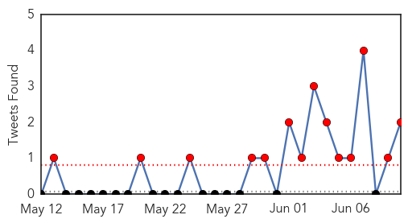
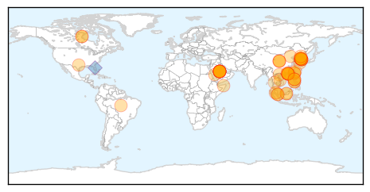
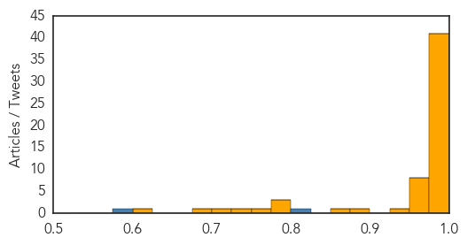

Measles
30-Day Web Trend
0 alerts, 0 warnings

30-Day Twitter Trend
1 alerts, 0 warnings

Article Locations

Article Confidences

Top Articles:
- 0.964
- Palmerston North Hospital staff in isolation as more measles cases considered
- 0.936
- German Measles eliminated from Americas
- 0.930
- Indian woman with Tuberculosis sets off scare in 3 US states
- 0.913
- Alaska confirms 1st measles case in more than a decade in Fairbanks
- 0.824
- AMA supports tighter limit on non-medical vaccine exemptions
- 0.791
- AMA: No vaccine exemptions for religious reasons or personal choice
- 0.750
- Diphtheria-Stricken Boy Becomes Spain's First Case In 28 Years, Thanks To Anti-Vaxxers
Top Tweets:
-
No tweets found for Jun 10, 2015
MERS
30-Day Web Trend
20 alerts, 2 warnings

30-Day Twitter Trend
14 alerts, 0 warnings

Article Locations

Article Confidences
Top Articles:
- 1.000
- Here's What You Need to Know About MERS
- 1.000
- South Korea Hit by the Largest Outbreak of the Middle East Respiratory Syndrome
- 1.000
- MERS: The virus from the desert
- 1.000
- MERS: What You Should Know
- 1.000
- WHO officials tell people, 'don't drink fatal camel urine' over MERS virus fears
- 1.000
- China's first MERS patient in stable condition, state media says; Hong Kong monitoring patient showing symptoms
- 1.000
- Death toll due to MERS rises to 9, Singapore steps up precautionary measures
- 0.999
- South Korea MERS outbreak keeping B.C. health officials vigilant
- 0.999
- MERS Virus's Ability to Jump from Animals to Humans Puzzles Scientists
- 0.999
- South Korea Hit by Most Severe MERS Outbreak Outside Saudi Arabia
- 0.999
- Viet Nam looks at 2000 passenger arrivals from South Korea
- 0.999
- South Korea MERS outbreak keeping B.C. health officials vigilant
- 0.999
- Public Health Notice: Middle East Respiratory Syndrome Coronavirus (MERS-CoV)
- 0.999
- South Korea MERS outbreak: 9 confirmed dead, 108 infected
- 0.998
- South Korea, WHO seeking cause of MERS transmissions
- 0.998
- Russia, controlli sanitari rafforzati per chi proviene dalla Corea del Sud (10 giu 2015)
- 0.998
- Outbreak Kills Six
- 0.998
- WHO MERS virus in South Korea is being monitored
- 0.998
- WHO MERS virus in South Korea is under control
- 0.998
- Mers outbreak prompts South Korea's Park to delay US visit
- 0.998
- Viet Nam monitors passenger arrivals from South Korea
- 0.998
- Outbreak in Korea follows new patterns-INSIDE Korea JoongAng Daily
- 0.997
- Joint mission to Republic of Korea on MERS-CoV begins well
- 0.997
- WHO recommends reopening S. Korean schools closed over MERS
- 0.997
- MERS Joint Mission to Republic of Korea is Underway
- 0.997
- News Scan for Jun 10, 2015
- 0.997
- Vietnam launches action plan against MERS
- 0.996
- MERS: China's first confirmed MERS patient stable, recovering slowly
- 0.995
- S. Korean MERS patient in China gradually recovers
- 0.995
- (LEAD) S. Korean MERS patient in China gradually recovers
- 0.994
- South Korea's Latest MERS Outbreak Leads to Death of 9 People, 2,800 in Quarantine and 2000 Closed Schools
- 0.994
- S. Korean MERS patient in China gradually recovers
- 0.993
- (LEAD) S. Korean MERS patient in China gradually recovers
- 0.993
- Science, Technology and Medicine News Updates From Asia
- 0.990
- Make-or-break week to stop the spread of virus-INSIDE Korea JoongAng Daily
- 0.989
- China's first MERS patient in stable condition, massive outbreak unlikely
- 0.988
- News Scan for Jun 09, 2015
- 0.986
- Top Stories
- 0.986
- China's first MERS patient recovering: officials
- 0.982
- DOH: Philippines remains free of MERS-CoV
- 0.982
- South Korean tourists are still welcome to Malaysia
- 0.975
- PH independence day event scrapped in S.Korea amid MERS scare
- 0.972
- Don't fear MERS, Korean doctors say
- 0.972
- Daily Express Newspaper Online, Sabah, Malaysia.
- 0.970
- WHO team puzzled by MERS behavior
- 0.970
- WHO team puzzled by MERS behavior – The Korea Times
- 0.965
- Beijing Utour Intl Travel Service : Mers scare
- 0.963
- Vietnam has no case of infected the MERS-CoV
- 0.955
- MOPH to strictly track health of Thai Hajj pilgrims
- 0.939
- Being prepared for Mers, Opinion News & Top Stories
Showing top 50 articles...
Top Tweets:
- 0.806
- RT: S. Korea-Gov confirms 13 new coronavirus MERS cases &2 deaths of prev known cases:total cases=108 &total deaths=9 https…
- 0.591
- AFD Blog `Hong Kong: Flu Returns As MERS Surveillance Intensifies' MERS-CoV http://t.co/43u0Qe6L9Q